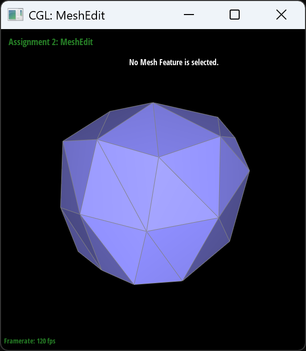
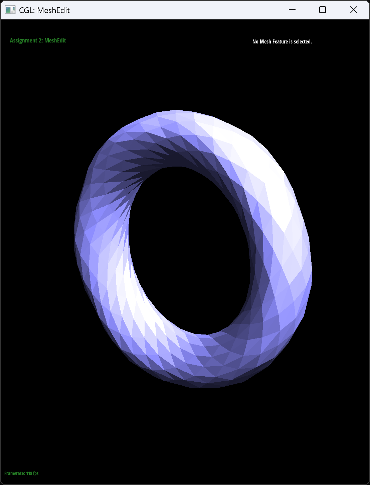
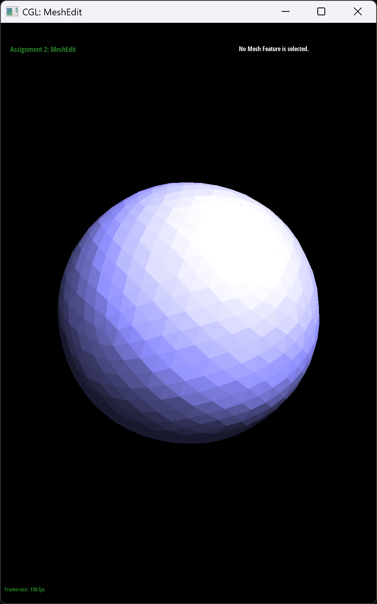

CS184/284A Spring 2025 Homework 2 Write-Up
Link to webpage: (TODO) cs184.eecs.berkeley.edu/sp25
Link to GitHub repository: (TODO) cs184.eecs.berkeley.edu/sp25
Overview
In this homework, we looked at various algorithms regarding meshes. We looked at Bezier curves and Bezier surfaces, implemented de Casteljau algorithm used it to evaluate points on Bezier curves and surfaces. Then, we implemented various simple algorithms for editing a triangle mesh using a very convenient data structure: halfedge structure.Section I: Bezier Curves and Surfaces
Since computers can only perform finite computations, smooth geometries are often represented using parametric functions, which can be evaluated efficiently. Thus, Bezier curves arise naturally as a very strong and applicable candidate, as it's highly versatile in its representability and simplicity in both definition and evaluation. Bezier curves are used in various places in computer graphics, for example in Scalable Vector Graphics (SVG) where images are represented by Bezier curves and places to fill in so that the image can be zoomed in without being pixelated, which can be used to create sharp fonts of arbitrarily large size.
Part 1: Bezier curves with 1D de Casteljau subdivision
A Bezier curve is a function from \([0,1]\) to \(\mathbb{R}^d\), and it's defined recursively through linear interpolation of lower degree Bezier curves. Let \(p_0,\dots,p_n\in\mathbb{R}^d\) be a sorted sequence of \(n+1\) control points, then the degree \(n\) Bezier curve through the control points is the function \(P_{p_0,\dots,p_n}(t)\) satisfying the recurrence relation \[P_{p_0,\dots,p_n}(t)=(1-t)P_{p_0,\dots,p_{n-1}}(t)+tP_{p_1,\dots,p_n}(t),\] where \(t\in[0,1]\).
The de Casteljau is a way to evaluate a point on the Bezier curve in an efficient and numerically stable manner. If we just naively implement the function
Vector3D Bezier(vector<Vector3D>::iterator start, vector<Vector3D>::iterator end, float t) {
if (std::abs(end-start) == 1)
return *start;
return lerp(Bezier(start, end-1, t), Bezier(start+1, end, t), t);
}
Then this function runs in \(O(2^n)\) time, as for each larger degree, we need two more calls. One way to mitigate this is to make the following observation: if we write down the recursive definition one more time, we will see that \[\begin{align*} P_{p_0,\dots,p_{n-1}}(t)&=(1-t)P_{p_0,\dots,p_{n-2}}(t)+tP_{p_1,\dots,p_{n-1}}(t)\\ P_{p_1,\dots,p_n}(t)&=(1-t)P_{p_1,\dots,p_{n-1}}(t)+tP_{p_2,\dots,p_n}(t) \end{align*}\] and we see that \(P_{p_1,\dots,p_{n-1}}(t)\) appears in both formulas, so we are doing a lot of wasted computation. We get more and more repeated terms if we further unravel the computation. Therefore, to solve this problem, we will use de Casteljau's algorithm. The idea is that, instead of evaluating the function from the highest degree to the lowest and naively following the recursive definition, instead we construct the points from the lowest degree to the highest degree and do not waste any computation. Specifically, suppose we want to evaluate \(P_{p_0,\dots,p_n}(t)\) for some fixed \(t\), we first start from the base case of degree 0: \[P_{p_0}(t),\dots,P_{p_n}(t).\] These values are easy to compute as they are just the points \(p_i\) themselves. Then, we see that the degree 1 Bezier curves are all linear interpolations of these points, so we can compute the values \[P_{p_0,p_1}(t),P_{p_1,p_2}(t),\dots,P_{p_{n-2},p_{n-1}}(t),P_{p_{n-1},p_n}(t).\] Now, so far we haven't saved any computation, but the next level is where de Casteljau's algorithm begins to save time: to compute the degree 2 Bezier curves, we can just take the two neighboring points in the previous list and linearly interpolate between them, and we will have \[P_{p_0,p_1,p_2}(t),P_{p_1,p_2,p_3}(t),\dots,P_{p_{n-3},p_{n-2},p_{n-1}}(t),P_{p_{n-2},p_{n-1},p_n}(t).\] Continuing this way, we will have \(P_{p_0,\dots,p_n}(t)\) in the very end. By counting the number of operations, we see that this algorithm is \(O(n^2)\), a lot better than exponential.
There is an obvious faster algorithm, which is to notice that, at the end of the day, \(P_{p_0,\dots,p_n}(t)\) is a degree \(n\) polynomial in \(t\), so we can perform a round of preprocessing to evaluate the coefficients of this polynomial, then use methods such as Horner's algorithm to evaluate it on many points. While this also works theoretically, it suffers from numerical stability, as a lot of cancellation happens when you explicitly compute the coefficients, while de Casteljau's algorithm is perfectly numerically stable. Thus, de Casteljau's algorithm is still much more preferable and robust for smaller degrees, such as \(n\leq 4\). Moreover, almost all of the Bezier curves appearing in computer graphics are cubic, as higher degree Bezier curves or polynomials in general are very difficult to control, which makes de Casteljau more favorable than computing the coefficients and the naive algorithm.
Hence, we can implement one round of de Casteljau's algorithm as follows:
vector<Vector2D> BezierCurve::evaluateStep(vector<Vector2D> const &points, float t) {
vector<Vector2D> out(points.size() - 1);
for (int i = 0; i + 1 < points.size(); i++)
out[i] = lerp(points[i], points[i + 1], t);
return out;
}
Now, we have the following Bezier curve trying to emulate the greek letter gamma \(\gamma\):
Here are the points of each level which is used for de Casteljau's algorithm:

And we can see that the final point is indeed on the curve:
If we modify the Bezier curve a bit, we see how the overall curve changes:

Part 2: Bezier surfaces with separable 1D de Casteljau
With Bezier curve function available, we can use it to create a two dimensional Bezier surface. The idea is that, instead of having a sequence of control points, we can have a 2D list of points. Then, since a surface has two parameters \(u,v\), we use \(u\) to evaluate the Bezier curve in one direction, and use \(v\) to evaluate the other direction. Specifically, if we have \((n+1)^2\) points \(p_{i,j}\) for \(i,j=0,1,\dots,n\), we define the intermediate control points \(q_i\) to be \[q_i(u)=P_{p_{i,0},\dots,p_{i,n}}(u),\] then with these as the control points, we evaluate the Bezier curve with \(v\) to create the final surface: \[S_{p_{i,j}}(u,v)=P_{q_0(u),\dots,q_n(u)}(v).\] We can evaluate this surface by calling our de Casteljau's algorithm \(n+1\) times for the intermediate control points and one more time for the final point. Specifically, we first build the de Casteljau's algorithm by using each level:
Vector3D BezierPatch::evaluate1D(vector<Vector3D> const &points, double t) const {
vector<Vector3D> control(points.begin(), points.end());
while (control.size() > 1)
control = evaluateStep(control, t);
return control[0];
}
Then, we call this function repeatedly for the control points and the final evaluation.
Vector3D BezierPatch::evaluate(double u, double v) const {
vector<Vector3D> u_control(controlPoints.size());
for (int i = 0; i < u_control.size(); i++)
u_control[i] = evaluate1D(controlPoints[i], u);
return evaluate1D(u_control, v);
Section II: Triangle Meshes and Half-Edge Data Structure
Meshes in computer graphics are almost always represented as a list of triangles, whether through an index list to a vertex array or an array of vertices where each three represent a triangle. While it is convenient and efficient for rendering large scenes for real time applications such as games or offline tasks such as movies, this structure does not tell us about the connectivity of the mesh and which triangles or edges are connected with each other. Even though an index list to a vertex array allows us to edit one point and have all triangles referencing the point to change, this only allows for geometric edits; for topological changes, such as changing how edges are connected or introducing more triangles, we would need a more sophisticated structure.
Thus, we introduce the half-edge data structure, which contains all the connectivity information about the mesh through an abstract idea half-edge. Each edge of the mesh contains two half-edges, both oriented in different directions. Thus, we call this pair of half-edges twins of each other. The half-edge obviously has an associated vertex, which is the start, and the unoriented edge. The half-edge is also associated to a face that contains the two points of the half-edge in counterclockwise direction. Lastly, each half-edge also has a next half-edge, which is the next half-edge in the counterclockwise direction in the associated face. Thus, the half-edge is as follows:
struct Halfedge {
Vertex *v;
Edge *e;
Face *f;
Halfedge *twin;
Halfedge *next;
}
void iterate_edge(Vertex *v) {
Halfedge *start = v->halfedge;
Halfedge *h = start;
do {
Edge *e = h->e;
// some computation with e.
h = h->twin->next;
} while (h != start);
}
void iterate_vertices(Face *f) {
Halfedge *start = f->halfedge;
Halfedge *h = start;
do {
Vertex *v = h->v;
// some computation with v.
h = h->next;
} while (h != start);
}
Part 3: Area-weighted vertex normals
One immediate application of the half-edge data structure is the area-weighted vertex normal. For this, we want to calculate the following: \[\sum_fa_f{\vec{\mathbf{n}}}_f\] where the sum goes over all faces \(f\) adjacent to a vertex, \(a_f\) is the area of the face, and \({\vec{\mathbf{n}}}_f\) is the normal of this face. Thus, we need to iterate through all the faces adjacent to a vertex, and we need a way to calculate area. For iteration, we can simply do
void iterate_face(Vertex *v) {
Halfedge *start = v->halfedge;
Halfedge *h = start;
do {
Face *f = h->f;
// computing the area of the face
h = h->twin->next;
} while (h != start);
}
Vector3D Vertex::normal(void) const {
Vector3D result;
HalfedgeIter start = _halfedge;
HalfedgeIter h = start;
do {
Vector3D v1 = h->vertex()->position;
Vector3D v2 = h->next()->vertex()->position;
Vector3D v3 = h->next()->next()->vertex()->position;
Vector3D n = cross(v2 - v1, v3 - v2);
result += n / 2;
h = h->twin()->next();
} while (h != start);
result.normalize();
return result;
}
Here's the final result of flat shading and area weighted normal shading:
Part 4: Edge flip
In this task, given two adjacent triangles sharing an edge, we want to flip the edge so that it's connecting the other vertex in each triangle, effectively flipping the edge. Since we store everything as iterators of lists, we are effectively storing pointers, so we can effectively just first record all the points, then set the values of the iterators in any order. For the code, we obtain the pointers to all the necessary half-edges, faces, and vertices, and we name them according to the figure for convenience, then we just set the values one by one.
The final result is as follows:
Part 5: Edge split
For this task, we want to split an edge by the middle, create a new vertex, and connect the vertex to the other two vertices. Similarly to the previous task, we first obtain all the necessary pointers, then we create the new vertex, two new half-edges, and one new edge, and we connect everything together. Again for the code, we see that if we name everything according to its name in the illustration, it's easy to tell what each field of the half-edge should be set to.
Here is the result after splitting arbitrarily along many different edges:
|
|
|
|
|
|
We have also implemented splitting along the boundary, and here's the result of splitting the boundary of the beetle car model:
|
|
|
Part 6: Loop subdivision for mesh upsampling
In this task, we refine the mesh. First we refine using loop subdivision. For this algorithm, we need to first iterate through all the vertices to compute the new location. Then, we split each edge in the original mesh, mark the new vertex as new, and loop over the newly added vertex to mark any new edge as being new. Then, we flip the new edges that aren't connecting two new vertices. Lastly, we update the positions to be the correct positions.
One technical challenge is that, when we are iterating through the list while adding, we can't iterate through the new elements. To mitigate this, we simply recorded the number of that type of object in the mesh, and stop when we've iterated through that many, since all the new objects of that type are at the end of the mesh. Then, one useful debug trick is to place a stop between each step of the operation to see if anything went wrong. Once we've identified the loop where the code went wrong, we can iterate the loop only once, or some number of times, to see exactly what happened, since if there's an error it's usually catastrophic and hides what really happened. With these debugging tricks, we were able to debug and find the error. Here is the final result:
We notice that sharp edges and corners will get smoothed out, for example for this cube
|  |
Even if the geometry is really badly behaved, as long as it's a valid manifold, loop subdivision still smoothed things out in a few more steps
Moreover, this method will generate nice regular topology of squares split along one diagonal for places that are originally of the same topology. It will have a slight bump around extraordinary points, which matches what we know: the surface is \(C^2\) around regular points and only guaranteed to be \(C^1\) around extraordinary points.
Coincidentally, we also see that splitting edge does sort of mitigate the smoothing effect, but not by too much,
|
|
|
As we can see for the cube, it becomes unsymmetric when we do several loop subdivision. We know that the topology, such as the valence at each vertex, has an effect on the subdivision surface, which is what's happening here. The main cause of the issue is due to the cube not having the same valence at each vertex. However, similar to the proof in lecture, this cube has 18 edges so the total sum of the valences needs to be 36, which means that for each vertex to have the same valence it needs to be \(36/8=4.5\), which is not an integer. Thus, to solve this problem, we need to split the edges in some way that each vertex has the same valence. We simply do this by split the diagonal edge on each face, then the final surface is symmetric:
To support boundary, we use the following interpolation rules: for vertices that are on the edge, the final position will be \(\frac34v+\frac18(a+b)\) where \(v\) is the position of the vertex, \(a,b\) are the boundary vertices directly adjacent to the vertex; for edges that are on the boundary, the final position will be the average of its two neighbor vertices (that should be on the boundary). This way, the boundary remains basically in place as it never averages vertices that aren't boundary, and it makes it smoother over time with this choice of coefficients. The final result is as follows:
We have also implemented \(\sqrt{3}\)-subdivision scheme.
For this, we applied a very similar procedure.
First, we implemented a method VertexIter HalfedgeMesh::splitFace(FaceIter f) for splitting a face by adding a point in the middle and connect it to the 3 vertices, and its position should be the average of the three points of the triangle.
Then, we flip all the old edges.
Lastly, we change the position of the old points to be \((1-\alpha_n)v+\frac{\alpha_n}{n}\sum_iv_i,\) where \(v\) is the original position, \(v_i\) sums over all vertices adjacent to \(v\), and \(n\) is the valence of \(v\).
We have one last choice of \(\alpha_n\), and the only choice that makes the final mesh smooth is \((4-2\cos(2\pi/n))/9\).
The final result of the mesh is as follows:
|  |
|  |
This method works well with triangles that are more equilateral, since it assumes the same weight for each vertex of the triangle. It leaves \(C^1\) points at each iteration, which will be smoothed by the next iteration but the next iteration will leave, although less noticeable, other \(C^1\) points.